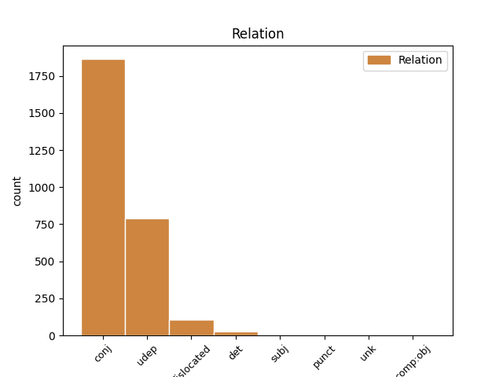

Distribution of features within this leaf



Agreement Rules sorted by frequency.
- When the dependent token is the underspecified dependency(udep) of the head token, and the head token is ADJ and the dependent token is PROPN.
1 अंबानी _ _ _ _ 0 _ _ _
2 बंधुओं _ _ _ _ 0 _ _ _
3 के _ _ _ _ 0 _ _ _
4 बीच _ _ _ _ 0 _ _ _
5 छिड़ी _ _ _ _ 0 _ _ _
6 कॉरपोरेट _ _ _ _ 0 _ _ _
7 जंग _ _ _ _ 0 _ _ _
8 के _ _ _ _ 0 _ _ _
9 बाद _ _ _ _ 0 _ _ _
10 अब _ _ _ _ 0 _ _ _
11 लंदन लंदन PROPN NNP Case=Nom|Gender=Masc|Number=Sing|Person=3 12 udep _ ChunkId=NP4|ChunkType=head|Tam=0|Translit=laṁdana|Vib=0
12 स्थित स्थित ADJ JJ Case=Nom 0 _ _ _
13 स्टील _ _ _ _ 0 _ _ _
14 महारथी _ _ _ _ 0 _ _ _
15 लक्ष्मी _ _ _ _ 0 _ _ _
16 मित्तल _ _ _ _ 0 _ _ _
17 और _ _ _ _ 0 _ _ _
18 उनके _ _ _ _ 0 _ _ _
19 भाई _ _ _ _ 0 _ _ _
20 प्रमोद _ _ _ _ 0 _ _ _
21 मित्तल _ _ _ _ 0 _ _ _
22 के _ _ _ _ 0 _ _ _
23 बीच _ _ _ _ 0 _ _ _
24 पश्चिम _ _ _ _ 0 _ _ _
25 अफ्रीका _ _ _ _ 0 _ _ _
26 में _ _ _ _ 0 _ _ _
27 लौह _ _ _ _ 0 _ _ _
28 अयस्क _ _ _ _ 0 _ _ _
29 उद्योग _ _ _ _ 0 _ _ _
30 को _ _ _ _ 0 _ _ _
31 लेकर _ _ _ _ 0 _ _ _
32 अप्रत्यक्ष _ _ _ _ 0 _ _ _
33 रूप _ _ _ _ 0 _ _ _
34 से _ _ _ _ 0 _ _ _
35 विवाद _ _ _ _ 0 _ _ _
36 शुरू _ _ _ _ 0 _ _ _
37 हो _ _ _ _ 0 _ _ _
38 गया _ _ _ _ 0 _ _ _
39 है _ _ _ _ 0 _ _ _
40 । _ _ _ _ 0 _ _ _
1 पहला _ _ _ _ 0 _ _ _
2 ग्लोबीजेन _ _ _ _ 0 _ _ _
3 यानि _ _ _ _ 0 _ _ _
4 सशक्त _ _ _ _ 0 _ _ _
5 अंतर्राष्ट्रीय _ _ _ _ 0 _ _ _
6 विचार _ _ _ _ 0 _ _ _
7 - _ _ _ _ 0 _ _ _
8 व्यवहार _ _ _ _ 0 _ _ _
9 वाले _ _ _ _ 0 _ _ _
10 भारतीयों _ _ _ _ 0 _ _ _
11 , _ _ _ _ 0 _ _ _
12 दूसरा दूसरा ADJ QO Case=Nom|Gender=Masc|Number=Sing|NumType=Ord 0 _ _ _
13 ग्लोबेट्यूड्स ग्लोबेट्यूड PROPN NNP Case=Nom|Gender=Masc|Number=Plur|Person=3 12 mod _ ChunkId=NP6|ChunkType=head|Tam=0|Translit=globeṭyūḍsa|Vib=0
14 यानि _ _ _ _ 0 _ _ _
15 सशक्त _ _ _ _ 0 _ _ _
16 अंतर्राष्ट्रीय _ _ _ _ 0 _ _ _
17 विचार _ _ _ _ 0 _ _ _
18 और _ _ _ _ 0 _ _ _
19 कमजोर _ _ _ _ 0 _ _ _
20 व्यवहार _ _ _ _ 0 _ _ _
21 वाले _ _ _ _ 0 _ _ _
22 भारतीयों _ _ _ _ 0 _ _ _
23 , _ _ _ _ 0 _ _ _
24 तीसरे _ _ _ _ 0 _ _ _
25 वर्ग _ _ _ _ 0 _ _ _
26 में _ _ _ _ 0 _ _ _
27 ग्लोबेहैव _ _ _ _ 0 _ _ _
28 यानी _ _ _ _ 0 _ _ _
29 कमजोर _ _ _ _ 0 _ _ _
30 अंतर्राष्ट्रीय _ _ _ _ 0 _ _ _
31 विचार _ _ _ _ 0 _ _ _
32 लेकिन _ _ _ _ 0 _ _ _
33 मजबूत _ _ _ _ 0 _ _ _
34 व्यवहार _ _ _ _ 0 _ _ _
35 वाले _ _ _ _ 0 _ _ _
36 भारतीयों _ _ _ _ 0 _ _ _
37 और _ _ _ _ 0 _ _ _
38 चौथे _ _ _ _ 0 _ _ _
39 वर्ग _ _ _ _ 0 _ _ _
40 में _ _ _ _ 0 _ _ _
41 लोकाजेन _ _ _ _ 0 _ _ _
42 यानी _ _ _ _ 0 _ _ _
43 कमजोर _ _ _ _ 0 _ _ _
44 अंतर्राष्ट्रीय _ _ _ _ 0 _ _ _
45 आचार _ _ _ _ 0 _ _ _
46 - _ _ _ _ 0 _ _ _
47 विचार _ _ _ _ 0 _ _ _
48 वाले _ _ _ _ 0 _ _ _
49 भारतीयों _ _ _ _ 0 _ _ _
50 को _ _ _ _ 0 _ _ _
51 रखा _ _ _ _ 0 _ _ _
52 गया _ _ _ _ 0 _ _ _
53 है _ _ _ _ 0 _ _ _
54 । _ _ _ _ 0 _ _ _
1 पहला _ _ _ _ 0 _ _ _
2 ग्लोबीजेन _ _ _ _ 0 _ _ _
3 यानि _ _ _ _ 0 _ _ _
4 सशक्त _ _ _ _ 0 _ _ _
5 अंतर्राष्ट्रीय _ _ _ _ 0 _ _ _
6 विचार _ _ _ _ 0 _ _ _
7 - _ _ _ _ 0 _ _ _
8 व्यवहार _ _ _ _ 0 _ _ _
9 वाले _ _ _ _ 0 _ _ _
10 भारतीयों _ _ _ _ 0 _ _ _
11 , _ _ _ _ 0 _ _ _
12 दूसरा दूसरा ADJ QO Case=Nom|Gender=Masc|Number=Sing|NumType=Ord 0 _ _ _
13 ग्लोबेट्यूड्स _ _ _ _ 0 _ _ _
14 यानि _ _ _ _ 0 _ _ _
15 सशक्त _ _ _ _ 0 _ _ _
16 अंतर्राष्ट्रीय _ _ _ _ 0 _ _ _
17 विचार _ _ _ _ 0 _ _ _
18 और _ _ _ _ 0 _ _ _
19 कमजोर _ _ _ _ 0 _ _ _
20 व्यवहार _ _ _ _ 0 _ _ _
21 वाले _ _ _ _ 0 _ _ _
22 भारतीयों _ _ _ _ 0 _ _ _
23 , _ _ _ _ 0 _ _ _
24 तीसरे _ _ _ _ 0 _ _ _
25 वर्ग _ _ _ _ 0 _ _ _
26 में _ _ _ _ 0 _ _ _
27 ग्लोबेहैव ग्लोबेहैव PROPN NNP Case=Nom|Gender=Masc|Number=Sing|Person=3 12 conj _ ChunkId=NP11|ChunkType=head|Tam=0|Translit=globehaiva|Vib=0
28 यानी _ _ _ _ 0 _ _ _
29 कमजोर _ _ _ _ 0 _ _ _
30 अंतर्राष्ट्रीय _ _ _ _ 0 _ _ _
31 विचार _ _ _ _ 0 _ _ _
32 लेकिन _ _ _ _ 0 _ _ _
33 मजबूत _ _ _ _ 0 _ _ _
34 व्यवहार _ _ _ _ 0 _ _ _
35 वाले _ _ _ _ 0 _ _ _
36 भारतीयों _ _ _ _ 0 _ _ _
37 और _ _ _ _ 0 _ _ _
38 चौथे _ _ _ _ 0 _ _ _
39 वर्ग _ _ _ _ 0 _ _ _
40 में _ _ _ _ 0 _ _ _
41 लोकाजेन _ _ _ _ 0 _ _ _
42 यानी _ _ _ _ 0 _ _ _
43 कमजोर _ _ _ _ 0 _ _ _
44 अंतर्राष्ट्रीय _ _ _ _ 0 _ _ _
45 आचार _ _ _ _ 0 _ _ _
46 - _ _ _ _ 0 _ _ _
47 विचार _ _ _ _ 0 _ _ _
48 वाले _ _ _ _ 0 _ _ _
49 भारतीयों _ _ _ _ 0 _ _ _
50 को _ _ _ _ 0 _ _ _
51 रखा _ _ _ _ 0 _ _ _
52 गया _ _ _ _ 0 _ _ _
53 है _ _ _ _ 0 _ _ _
54 । _ _ _ _ 0 _ _ _
Disagree Examples:
1 इसकी _ _ _ _ 0 _ _ _
2 दीवारों _ _ _ _ 0 _ _ _
3 पर _ _ _ _ 0 _ _ _
4 अकबर अकबर PROPN NNP Case=Nom|Gender=Masc|Number=Sing|Person=3 5 udep _ ChunkId=NP3|ChunkType=head|Tam=0|Translit=akabara|Vib=0
5 कालीन कालीन ADJ JJ Case=Acc 0 _ _ _
6 कला _ _ _ _ 0 _ _ _
7 के _ _ _ _ 0 _ _ _
8 नमूने _ _ _ _ 0 _ _ _
9 देखे _ _ _ _ 0 _ _ _
10 जा _ _ _ _ 0 _ _ _
11 सकते _ _ _ _ 0 _ _ _
12 हैं _ _ _ _ 0 _ _ _
13 । _ _ _ _ 0 _ _ _
1 साँची साँची PROPN NNP Case=Nom|Gender=Masc|Number=Sing|Person=3 2 udep _ ChunkId=NP|ChunkType=head|Tam=0|Translit=sām̃cī|Vib=0
2 स्थित स्थित ADJ JJ Case=Acc 0 _ _ _
3 इन _ _ _ _ 0 _ _ _
4 स्तूपों _ _ _ _ 0 _ _ _
5 का _ _ _ _ 0 _ _ _
6 निर्माण _ _ _ _ 0 _ _ _
7 प्रायः _ _ _ _ 0 _ _ _
8 धार्मिक _ _ _ _ 0 _ _ _
9 उद्देश्यों _ _ _ _ 0 _ _ _
10 को _ _ _ _ 0 _ _ _
11 लेकर _ _ _ _ 0 _ _ _
12 किया _ _ _ _ 0 _ _ _
13 गया _ _ _ _ 0 _ _ _
14 था _ _ _ _ 0 _ _ _
15 . _ _ _ _ 0 _ _ _
1 कमल _ _ _ _ 0 _ _ _
2 ताल ताल PROPN NNP Case=Nom|Gender=Masc|Number=Sing|Person=3 3 udep _ ChunkId=NP|ChunkType=head|Tam=0|Translit=tāla|Vib=0
3 नामक नामक ADJ JJ Case=Acc 0 _ _ _
4 तालाब _ _ _ _ 0 _ _ _
5 के _ _ _ _ 0 _ _ _
6 नजदीक _ _ _ _ 0 _ _ _
7 बने _ _ _ _ 0 _ _ _
8 इस _ _ _ _ 0 _ _ _
9 महल _ _ _ _ 0 _ _ _
10 के _ _ _ _ 0 _ _ _
11 साथ _ _ _ _ 0 _ _ _
12 राजस्थान _ _ _ _ 0 _ _ _
13 के _ _ _ _ 0 _ _ _
14 इतिहास _ _ _ _ 0 _ _ _
15 की _ _ _ _ 0 _ _ _
16 सबसे _ _ _ _ 0 _ _ _
17 रोमांचक _ _ _ _ 0 _ _ _
18 कथा _ _ _ _ 0 _ _ _
19 जुड़ी _ _ _ _ 0 _ _ _
20 है _ _ _ _ 0 _ _ _
21 । _ _ _ _ 0 _ _ _
1 ऋषिकेश _ _ _ _ 0 _ _ _
2 से _ _ _ _ 0 _ _ _
3 220 _ _ _ _ 0 _ _ _
4 किमी _ _ _ _ 0 _ _ _
5 का _ _ _ _ 0 _ _ _
6 सड़क _ _ _ _ 0 _ _ _
7 मार्ग _ _ _ _ 0 _ _ _
8 तय _ _ _ _ 0 _ _ _
9 करने _ _ _ _ 0 _ _ _
10 के _ _ _ _ 0 _ _ _
11 बाद _ _ _ _ 0 _ _ _
12 फूलचट्टी फूलचट्टी PROPN NNP Case=Nom|Gender=Masc|Number=Sing|Person=3 13 udep _ ChunkId=NP4|ChunkType=head|Tam=0|Translit=phūlacaṭṭī|Vib=0
13 नामक नामक ADJ JJ Case=Acc 0 _ _ _
14 स्थान _ _ _ _ 0 _ _ _
15 से _ _ _ _ 0 _ _ _
16 यमनोत्री _ _ _ _ 0 _ _ _
17 की _ _ _ _ 0 _ _ _
18 चढ़ाई _ _ _ _ 0 _ _ _
19 प्रारंभ _ _ _ _ 0 _ _ _
20 होती _ _ _ _ 0 _ _ _
21 है _ _ _ _ 0 _ _ _
22 । _ _ _ _ 0 _ _ _
1 उसे _ _ _ _ 0 _ _ _
2 बाद _ _ _ _ 0 _ _ _
3 में _ _ _ _ 0 _ _ _
4 जालंधर जालंधर PROPN NNP Case=Nom|Gender=Masc|Number=Sing|Person=3 5 udep _ ChunkId=NP3|ChunkType=head|Tam=0|Translit=jālaṁdhara|Vib=0
5 स्थित स्थित ADJ JJ Case=Acc 0 _ _ _
6 गांधी _ _ _ _ 0 _ _ _
7 वनीता _ _ _ _ 0 _ _ _
8 आश्रम _ _ _ _ 0 _ _ _
9 में _ _ _ _ 0 _ _ _
10 रखा _ _ _ _ 0 _ _ _
11 गया _ _ _ _ 0 _ _ _
12 था _ _ _ _ 0 _ _ _
13 । _ _ _ _ 0 _ _ _